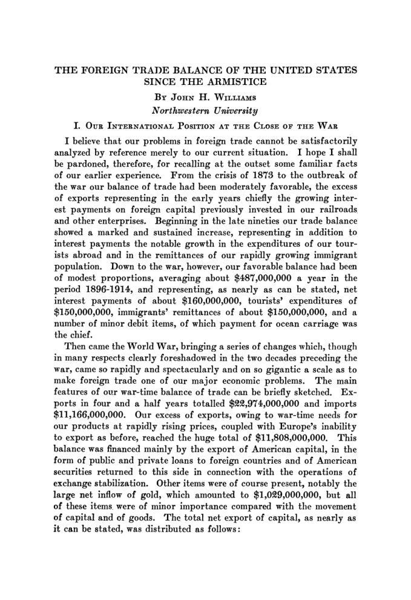

Williams, 1920: o credor que ainda não recebia
Leitura: 8 min
Williams reconstrói o balanço de pagamentos dos Estados Unidos depois do armistício e mostra que o maior saldo comercial da história era financiado por crédito bancário de curto prazo.


Entre 1º de novembro de 1918 e 1º de novembro de 1920, as exportações dos Estados Unidos superaram as importações em US$ 6.782 milhões, cerca de um bilhão a mais do que nos dois últimos anos da guerra. Era o maior saldo de qualquer período igual na história do país. Ao mesmo tempo, o país perdia ouro: a exportação líquida até 1º de novembro de 1920 chegava a US$ 260 milhões. John H. Williams, da Northwestern University, chamou isso de paradoxo aparente e dedicou seu texto, lido em Atlantic City em 27 de dezembro de 1920, a explicá-lo.
O que a guerra mudou na posição do país?
Williams começa pela história. Desde a crise de 1873, o país tinha um saldo comercial moderadamente favorável, que pagava sobretudo juros sobre o capital estrangeiro investido em ferrovias e outras empresas, e, a partir do fim da década de 1890, também os gastos de turistas no exterior e as remessas dos imigrantes. Entre 1896 e 1914, o saldo médio foi de cerca de US$ 487 milhões por ano.
A guerra mudou a escala. Em quatro anos e meio, as exportações somaram US$ 22.974 milhões e as importações US$ 11.166 milhões, um excesso de US$ 11.808 milhões, financiado principalmente pela exportação de capital: títulos americanos devolvidos pela Europa, empréstimos privados e, acima de tudo, adiantamentos do governo aos aliados.
Muitos concluíram que o país se tornara credor e que logo teria excesso de importações, como na virada de 1873. Um estudo da Review of Economic Statistics de 1919, do qual Williams foi coautor, indicava que não era bem assim: a conta de juros passara de um pagamento líquido de cerca de US$ 160 milhões por ano a um recebimento de US$ 525 milhões, se a Europa pudesse pagar; mas as remessas e o turismo reduziam esse saldo, e por alguns anos o capital continuaria a sair. A inversão do saldo comercial viria, mas não tão cedo.
Por que o credor continuava a exportar?
Dois anos depois, Williams vê a previsão confirmada. A recuperação europeia era lenta, com déficits orçamentários, papel-moeda inconversível e embargos ao ouro, e os juros dos créditos do governo aos aliados estavam suspensos, pagáveis em títulos de financiamento. Os adiantamentos em dinheiro somavam US$ 9.466.283.170 em 15 de novembro de 1920; com as compras de material de guerra e os juros atrasados, o total chegava a cerca de US$ 10.814 milhões, que a 5% renderiam US$ 541 milhões por ano. A Grã-Bretanha respondia por 44% dos créditos. Enquanto esses juros não fossem pagos em dinheiro, os itens invisíveis davam saldo devedor.
Outro ponto é a diferença entre valor e quantidade. A expansão do comércio depois do armistício foi muito mais em valor do que em volume. Pelo índice do Federal Reserve Bulletin, o volume das exportações caíra 14% desde 1919 e em 1920 pouco superava o de antes da guerra, enquanto o volume médio mensal das importações nos nove primeiros meses de 1920 era 92,2% maior que o de 1913. Williams tira daí uma conclusão polêmica: o comércio exterior não esvaziou o mercado interno de mercadorias; aumentou a parte da produção mundial que o abastecia.
Quem financiava o saldo?
Em junho de 1919, o governo deixou de financiar exportações. Desde então, o peso recaiu sobre bancos e exportadores, em créditos de curto prazo. O investimento de longo prazo foi pequeno: as novas emissões estrangeiras, de US$ 897 milhões até novembro de 1920, foram mais que compensadas por US$ 1.086 milhões de empréstimos vencidos. Somando investimentos diretos de empresas americanas no exterior, de fábricas no Canadá a usinas de açúcar em Cuba, e compras de títulos europeus, o investimento total desde o início de 1919 foi de cerca de US$ 1.649 milhões.
As estimativas dos créditos de curto prazo variavam de modo extremo; Williams diz ter ouvido de US$ 500 milhões a US$ 5 bilhões. Seu balanço de pagamentos de 1º de janeiro de 1919 a 1º de novembro de 1920 dá um saldo credor sem outra contrapartida de US$ 2.852 milhões, cifra que ele trata como preliminar e que provavelmente não passaria de US$ 2,5 bilhões. B. M. Anderson Jr., do Chase, estimava a dívida europeia não financiada em pelo menos US$ 4 bilhões.
Londres ainda compensava as contas do mundo?
A diferença entre os dois, explica Williams, é de método. Anderson calcula só o saldo com a Europa, porque julga que os países empobrecidos pela guerra não têm créditos em outra parte para compensar suas dívidas. Williams calcula o saldo com o mundo inteiro e sustenta que a compensação triangular voltara a funcionar. O país tinha saldo devedor com os países fora da Europa e credor com a Europa, como antes da guerra, e convertia as exportações em libras para pagar o resto do mundo.
Como prova, aponta a recuperação britânica. Nos primeiros dez meses de 1920, as exportações britânicas cresceram 78% em valor sobre 1919, e de julho a outubro o excesso de importações caíra abaixo da proporção de antes da guerra. A Grã-Bretanha voltara a ser o mercado de dinheiro do mundo, assumindo parte da dívida do continente com os Estados Unidos. Se os saldos com países fora da Europa não fossem compensados em Londres, pergunta, quem estaria financiando os Estados Unidos?
Qual seria a saída?
Williams apoia a retirada do governo do financiamento das exportações e rejeita reviver agências de guerra. Se o saldo só puder ser financiado com crédito curto, diz, é melhor que as exportações continuem a cair.
“Há pouco a ganhar e muito a perder em pagar indefinidamente nossas exportações do próprio bolso.” (“There is little to be gained and much to be lost by indefinite continuance of a policy of paying for our exports out of our own pockets.”)
A solução permanente, para ele, é a Edge Act e a decisão de criar uma corporação de financiamento do comércio exterior de US$ 100 milhões. Ela venderia a investidores americanos suas debêntures, até US$ 1 bilhão, garantidas por títulos estrangeiros entregues pelos importadores. Assim trocaria crédito curto por investimento longo e superaria a hesitação do investidor americano, que compraria papel de uma empresa conhecida. O mecanismo, lembra, é o dos fundos de investimento britânicos, escoceses e suíços, e foi usado em 1916 pela American Foreign Securities Company num empréstimo de US$ 100 milhões à França.
A longo prazo, acrescenta, esse capital financiaria sobretudo o comércio com o mundo fora da Europa e a exportação de manufaturas: a parte das exportações destinada à Europa caíra de 63% em 1918 para 54% nos nove primeiros meses de 1920, e a das manufaturas no total exportado subira de 40% em 1900 para 51%. O país passava do estágio agrícola e extrativo ao industrial.
A conclusão é que a inversão do saldo comercial é o resultado lógico da nova posição credora. O investimento externo pode adiá-la, mas não evitá-la, e ela virá tanto pelo crescimento das importações quanto pela queda das exportações. Por isso, elevar tarifas naquele momento seria um erro.
“o comércio exterior tem de ser recíproco e repousa, em última instância, no pagamento de bens com bens” (“foreign trade must be reciprocal, and rests ultimately upon the payment for goods with goods”)
Na minha leitura
Na minha leitura, o texto é um exercício exemplar de contabilidade do balanço de pagamentos feito com dados incompletos. Williams não tem estatística dos itens invisíveis; estima-os e diz quais estimativas são frágeis. Mesmo assim, chega a uma tese clara: um credor que não recebe juros e não importa precisa emprestar mais para continuar exportando, e crédito bancário de curto prazo não é a forma sustentável de fazê-lo.
O debate com Anderson sobre a compensação triangular também mostra uma questão de método que continua útil: um saldo bilateral só faz sentido dentro do balanço com o mundo todo. E a advertência final contra tarifas, num credor cujas exportações dependem de que os devedores consigam vender-lhe bens, é a mesma que se fará com frequência ao longo da década seguinte.
Glossário
- Balanço de pagamentos
- registro de todas as transações de um país com o exterior, de mercadorias, serviços, rendas e capitais.
- Itens invisíveis
- serviços, juros, fretes, remessas e gastos de turistas, que não passam pela alfândega.
- Compensação triangular
- pagamento de um saldo com um país usando créditos obtidos com outro.
- Créditos de curto prazo
- financiamentos de bancos e exportadores com vencimento em meses, renovados conforme a necessidade.
- Edge Act
- lei de 1919 que permitiu criar corporações federais para financiar o comércio exterior.
- Debênture
- título de dívida emitido por uma empresa, aqui garantido por títulos estrangeiros.
Fontes
- The Foreign Trade Balance of the United States Since the Armistice — John H. Williams (Northwestern University) (pp. 22–39). JSTOR · Internet Archive (PDF)
- Edição completa, com os demais artigos: Nº 169 do Arquivo.
Documento em domínio público (EUA, publicado antes de 1931), via JSTOR Early Journal Content e Internet Archive. Resumo e comentário do autor deste site, sem afiliação com a American Economic Association. Encontrou um erro? Escreva: a correção é publicada no próprio texto, com data.
↑ Nº 169 · Atlantic City, 1920: ferrovias, carvão e o credor que não recebia J. M. Clark, 1920: seis axiomas da economia virados ao avesso →